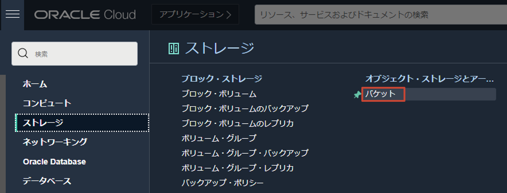

このエントリーでは、OCI Data Flow と OCI Streaming を用いて、Structured Spark Streaming の基礎を学習します。
前提条件
- Oracle Cloud のアカウントを取得済みであること
- OCI CLI v3.4.5 以上がインストールされていること
- Cloud Shell の利用を推奨
- Data Flow ハンズオン(初級編) - 事前準備が完了していること
- Object Storage の namespace が確認できていること
- Data Flow を使用するために必要な各種バケット（dataflow-logs, dataflow-warehouse）の作成が完了していること
- Data Flow を使用するためのポリシーの設定が完了していること
ハンズオンの全体像

OCI Streaming へ publish したメッセージを Data Flow 上で動作する Spark アプリケーションが subscribe し、メッセージ中に出現した単語の回数を 1 分間の集計ウィンドウでカウントし、その集計結果を出力します。
事前準備
Cloud Shell の起動
OCI コンソール右上の Cloud Shell をクリックし、Cloud Shell を起動します。

Compartment ID の確認
以下のハンズオンでは、OCI CLI を活用し進めていきます。その際、各種コマンドを発行するために必要な Compartment ID を確認します。コンソール左上のハンバーガーメニューからアイデンティティとセキュリティ > アイデンティティ > コンパートメントと選択します。

自身のコンパートメント（もしくは、ルート・コンパートメント）の詳細画面で Compartment ID をコピーします。

以降の手順を効率化するために、Cloud Shell の環境変数に Compartment ID を設定しておきます。
export C=<compartment-id>
ハンズオンに使用するバケットの作成
プログラムの格納先や結果の出力先であるバケットを作成します。
oci os bucket create \
--name structured-spark-streaming \
--compartment-id $C
以下のような実行結果が得られます。（※結果は一部マスク、変更しています）
{
"data": {
"approximate-count": null,
"approximate-size": null,
"auto-tiering": null,
"compartment-id": "ocid1.compartment.oc1...",
"created-by": "ocid1.saml2idp.oc1.../foo.bar@example.com",
"defined-tags": {},
"etag": "6e15d6c6-5147-4820-9c61-d9ffb6234fc4",
"freeform-tags": {},
"id": "ocid1.bucket.oc1.ap-tokyo-1.aaaaaaaa6wvibxss6iux3onoes5k7jvf25fjujvmmi6ijyiaj7aaha3qboba",
"is-read-only": false,
"kms-key-id": null,
"metadata": {},
"name": "structured-spark-streaming",
"namespace": "xxxxxxxxxx",
"object-events-enabled": false,
"object-lifecycle-policy-etag": null,
"public-access-type": "NoPublicAccess",
"replication-enabled": false,
"storage-tier": "Standard",
"time-created": "2022-02-11T08:39:16.417000+00:00",
"versioning": "Disabled"
},
"etag": "6e15d6c6-5147-4820-9c61-d9ffb6234fc4"
}
ハンズオンに使用するサンプルコード等を取得する
ハンズオンで使用するサンプルコードを取得します。
mkdir $HOME/dataflow-handson; \
cd dataflow-handson; \
git clone https://github.com/oracle-japan/oracle-dataflow-examples.git
OCI Streaming へ publish していく文章コンテンツをダウンロードします。
wget -P /tmp http://mattmahoney.net/dc/enwik8.zip; \
unzip /tmp/enwik8.zip -d /tmp
それぞれ以下のようになっていれば、ハンズオンに使用する資材一式の準備は完了です。
$HOME/dataflow-handson 配下:
ls $HOME/dataflow-handson
実行結果
oracle-dataflow-examples
/tmp 配下
ls /tmp | grep -i enwik8
実行結果
enwik8
enwik8.zip
OCI Streaming の作成、接続情報の確認
ストリーム・プールの作成
ハンズオン用にストリームの管理単位であるストリーム・プールを作成します。
oci streaming admin stream-pool create \
--name HandsonStreamPool \
--compartment-id $C
以下のような実行結果が得られます。（※結果は一部マスク、変更しています）
{
"data": {
"compartment-id": "ocid1.compartment.oc1...",
"custom-encryption-key": {
"key-state": "NONE",
"kms-key-id": null
},
"defined-tags": {},
"endpoint-fqdn": null,
"freeform-tags": {},
"id": "ocid1.streampool.oc1.ap-tokyo-1.amaaaaaassl65iqaawm47ao4vdh35sz4phg5i2frgtgonrnkupv57hfgwqgq",
"is-private": false,
"kafka-settings": {
"auto-create-topics-enable": false,
"bootstrap-servers": null,
"log-retention-hours": 24,
"num-partitions": 1
},
"lifecycle-state": "CREATING",
"lifecycle-state-details": null,
"name": "HandsonStreamPool",
"private-endpoint-settings": {
"nsg-ids": null,
"private-endpoint-ip": null,
"subnet-id": null
},
"time-created": "2022-02-11T08:42:55.537000+00:00"
},
"etag": "\"1d6ccdb3-5d98-4b86-87b0-31c250ef64d9-731b2788-bb13-4cac-8228-b96362842c64\""
}
ストリームの作成
文章コンテンツを publish するためのストリームを作成します。（※<stream-pool-id> は、ストリーム・プール作成のレスポンスに含まれる $.data.id をご参照ください。）
oci streaming admin stream create \
--name word-count-stream \
--stream-pool-id <stream-pool-id> \
--partitions 1
以下のような実行結果が得られます。（※結果は一部マスク、変更しています）
{
"data": {
"compartment-id": "ocid1.compartment.oc1...",
"defined-tags": {},
"freeform-tags": {},
"id": "ocid1.stream.oc1.ap-tokyo-1.amaaaaaassl65iqaox7vccpm36cop6o47zvn742toudvks6ibzrnnhx35iva",
"lifecycle-state": "CREATING",
"lifecycle-state-details": null,
"messages-endpoint": "https://cell-1.streaming.ap-tokyo-1.oci.oraclecloud.com",
"name": "word-count-stream",
"partitions": 1,
"retention-in-hours": 24,
"stream-pool-id": "ocid1.streampool.oc1.ap-tokyo-1.amaaaaaassl65iqaawm47ao4vdh35sz4phg5i2frgtgonrnkupv57hfgwqgq",
"time-created": "2022-02-11T08:43:34.382000+00:00"
},
"etag": "\"fe0f09ff-4768-424a-ba8a-d8e5d4c0963e-d89b5f7b-ad83-4d34-bcea-b508f348c92e\""
}
接続情報の確認
Kafka 互換 API を使用し、Spark アプリケーションが OCI Streaming と pub/sub するための接続情報を確認します。OCI コンソール画面左上のハンバーガーメニューを展開し、アナリティクスと AI > メッセージング > ストリーミングをクリックします。

ストリーム・プールを選択し、先ほど作成した HandsonStreamPool を選択します。

Kafka 接続設定を押すと、接続に必要な情報群が表示されるので、これをすべてコピーしメモ帳などに控えておきます。

認証トークンの取得
Kafka 互換 API では、認証トークンを用いて認証を行うため、その際に必要なトークンを取得します。OCI コンソール画面右上の人型のアイコンをクリックし、展開したプロファイルからユーザ名(oracleidentitycloudservice/<username>)をクリックします。

下にスクロールした左側にある認証トークンをクリックして、トークンの作成画面に遷移します。

トークンの生成をクリックします。

トークンの用途を説明する情報（任意の文字列）を入力し、トークンの生成ボタンをクリックします。

生成されたトークンをコピーし、メモ帳等に控えておきます。

ハンズオン
Object Storage にプログラム一式をアップロード
Data Flow は、Object Storage からアプリケーションをロードし実行するため、Data Flow アプリケーションの作成前に Object Storage へ Spark アプリケーションを格納しておく必要があります。
アプリケーションをビルドします。（数分要します）
cd $HOME/dataflow-handson/oracle-dataflow-examples/structured_streaming_kafka_word_count; \
./mvnw package
生成された JAR ファイルを Object Storage にアップロードします。
oci os object put \
--bucket-name structured-spark-streaming \
--file target/StructuredKafkaWordCount.jar \
--name program/StructuredKafkaWordCount.jar
以下のような実行結果が得られます。
Uploading object [####################################] 100%
{
"etag": "bb8262b0-1254-4acb-947d-fb9c2417fc7d",
"last-modified": "Fri, 11 Feb 2022 08:50:32 GMT",
"opc-content-md5": "pTw0HkkFQW/DA/C/Z6MNXw=="
}
Data Flow アプリケーションを作成する
Data Flow アプリケーション1を作成します。コマンド実行前にいくつかのパラメーターを以下のように置き換えます。
| before | after |
|---|---|
| <namespace> | Object Storage の namespace |
| <kafka-bootstrap-server> | 接続情報の確認で確認したブートストラップ・サーバーの値(cell-1.streaming.ap-tokyo-1.oci.oraclecloud.com:9092のような形式) |
| <username> | 接続情報の確認で確認した username（xxxxxxxxxx/oracleidentitycloudservice/foo.bar@example.com/ocid1.streampool.oc1.ap-tokyo-1...のような形式） |
| <auth-token> | 認証トークンの取得で確認した認証トークンの値 |
oci data-flow application create \
--compartment-id $C \
--display-name "StructuredKafkaWordCount" \
--driver-shape VM.Standard2.1 \
--executor-shape VM.Standard2.1 \
--num-executors 1 \
--spark-version 3.0.2 \
--type streaming \
--file-uri "oci://structured-spark-streaming@<namespace>/program/StructuredKafkaWordCount.jar" \
--logs-bucket-uri "oci://dataflow-logs@<namespace>" \
--language Java \
--class-name example.StructuredKafkaWordCount \
--arguments "<kafka-bootstrap-server> word-count-stream plain <username> <auth-token> oci://structured-spark-streaming@<namespace>/checkpoint csv oci://structured-spark-streaming@<namespace>/output"
以下のような実行結果が得られます。（※結果は一部マスク、変更しています）
{
"data": {
"archive-uri": "",
"arguments": [
"cell-1.streaming.ap-tokyo-1.oci.oraclecloud.com:9092",
"word-count-stream",
"plain",
"xxxxxxxxxx/oracleidentitycloudservice/foo.bar@example.com/ocid1.streampool.oc1.ap-tokyo-1.amaaaaaassl65iqaawm47ao4vdh35sz4phg5i2frgtgonrnkupv57hfgwqgq",
"RyADlvW1ZwyxbEj<S:IM",
"oci://structured-spark-streaming@xxxxxxxxxx/checkpoint",
"csv",
"oci://structured-spark-streaming@xxxxxxxxxx/output"
],
"class-name": "example.StructuredKafkaWordCount",
"compartment-id": "ocid1.compartment.oc1...",
"configuration": null,
"defined-tags": {},
"description": null,
"display-name": "StructuredKafkaWordCount",
"driver-shape": "VM.Standard2.1",
"execute": null,
"executor-shape": "VM.Standard2.1",
"file-uri": "oci://structured-spark-streaming@xxxxxxxxxx/program/StructuredKafkaWordCount.jar",
"freeform-tags": {},
"id": "ocid1.dataflowapplication.oc1.ap-tokyo-1.anxhiljrssl65iqa2i73ll4xgyk7g2b3t3adhhn5uyvihu4koaxmteirfvcq",
"language": "JAVA",
"lifecycle-state": "ACTIVE",
"logs-bucket-uri": "oci://dataflow-logs@xxxxxxxxxx/",
"metastore-id": null,
"num-executors": 1,
"owner-principal-id": "ocid1.saml2idp.oc1.../foo.bar@example.com",
"owner-user-name": "foo.bar@example.com",
"parameters": null,
"private-endpoint-id": "",
"spark-version": "3.0.2",
"time-created": "2022-02-11T08:55:23.984000+00:00",
"time-updated": "2022-02-11T08:55:23.984000+00:00",
"type": "STREAMING",
"warehouse-bucket-uri": null
}
}
OCI Streaming にメッセージを publish する
OCI Streaming にメッセージを publish するためのプログラムの一部（Kafka の接続定義）を各自の環境に合わせて修正します。
vim producer/producer-from-file.py
# ...
kafka_bootstrap_server = '<kafka-bootstrap-server>'
kafka_topic = '<topic-name>'
kafka_username = '<username>'
kafka_streampool_id = '<stream-pool-id>'
kafka_token = '<auth-token>'
# ...
この部分を以下のように修正します。
| before | after |
|---|---|
| <kafka-bootstrap-server> | 接続情報の確認で確認したブートストラップ・サーバーの値(cell-1.streaming.ap-tokyo-1.oci.oraclecloud.com:9092のような形式) |
| <topic-name> | word-count-stream |
| <username> | 接続情報の確認で確認した username（xxxxxxxxxx/oracleidentitycloudservice/foo.bar@example.com/ocid1.streampool.oc1.ap-tokyo-1...のような形式） |
| <stream-pool-id> | ストリーム・プールの作成で確認した $.data.id の値 |
| <auth-token> | 認証トークンの取得で確認した認証トークンの値 |
実行します。
cd $HOME/dataflow-handson/oracle-dataflow-examples/structured_streaming_kafka_word_count/producer; \
pip install kafka-python; \
python3 producer-from-file.py > /tmp/tutorial.`date "+%Y%m%d_%H%M%S"` 2>&1 &
以下のように出力されることを確認します。(PID は一例)
[1] 1874
生成されたファイル名を確認します。
ls /tmp | grep -i tutorial
以下のように出力されます。
tutorial.20220211_091715
中身を確認します。
tail -f /tmp/tutorial.20220211_091715
Iteration 1, key=2022-02-11 09:17:17.068535 - Done. 36.45 sec. のような文字列が出力されていれば、OCI Streaming に対する publish は成功しています。
Creating Kafka producer... Done.
Streaming... (Press Ctrl+C to cancel)
Iteration 1, key=2022-02-11 09:17:17.068535 - Done. 36.45 sec.
Iteration 2, key=2022-02-11 09:18:17.081127 - Done. 32.29 sec.
Iteration 3, key=2022-02-11 09:19:17.101124 - Done. 34.54 sec.
# ...
Data Flow アプリケーションを実行する
作成した Data Flow アプリケーションを実行します。（<application-ocid>は、Data Flow アプリケーションを作成するの実行結果の$.data.idをご参照ください）
oci data-flow run create \
--compartment-id $C \
--application-id <application-ocid> \
--display-name "StructuredKafkaWordCount"
以下のような実行結果が得られます。（※結果は一部マスク、変更しています）
{
"data": {
"application-id": "ocid1.dataflowapplication.oc1.ap-tokyo-1.anxhiljrssl65iqa2i73ll4xgyk7g2b3t3adhhn5uyvihu4koaxmteirfvcq",
"archive-uri": "",
"arguments": [
"cell-1.streaming.ap-tokyo-1.oci.oraclecloud.com:9092",
"word-count-stream",
"plain",
"xxxxxxxxxx/oracleidentitycloudservice/foo.bar@example.com/ocid1.streampool.oc1.ap-tokyo-1.amaaaaaassl65iqaawm47ao4vdh35sz4phg5i2frgtgonrnkupv57hfgwqgq",
"RyADlvW1ZwyxbEj<S:IM",
"oci://structured-spark-streaming@xxxxxxxxxx/checkpoint",
"csv",
"oci://structured-spark-streaming@xxxxxxxxxx/output"
],
"class-name": "example.StructuredKafkaWordCount",
"compartment-id": "ocid1.compartment.oc1...",
"configuration": null,
"data-read-in-bytes": 0,
"data-written-in-bytes": 0,
"defined-tags": {},
"display-name": "StructuredKafkaWordCount",
"driver-shape": "VM.Standard2.1",
"execute": "",
"executor-shape": "VM.Standard2.1",
"file-uri": "oci://structured-spark-streaming@xxxxxxxxxx/program/StructuredKafkaWordCount.jar",
"freeform-tags": {},
"id": "ocid1.dataflowrun.oc1.ap-tokyo-1.anxhiljrssl65iqabzbautd7p3wykkz4zlokg3srxdbqbkfzanllgdcafgna",
"language": "JAVA",
"lifecycle-details": null,
"lifecycle-state": "ACCEPTED",
"logs-bucket-uri": "oci://dataflow-logs@xxxxxxxxxx/",
"metastore-id": null,
"num-executors": 1,
"opc-request-id": "FCD3FF68FDF4496C9C6EEE8D79A73A61/F691E7308591D212A3A734C82E8B3B43",
"owner-principal-id": "ocid1.saml2idp.oc1.../foo.bar@example.com",
"owner-user-name": "foo.bar@example.com",
"parameters": null,
"private-endpoint-dns-zones": null,
"private-endpoint-id": null,
"private-endpoint-max-host-count": null,
"private-endpoint-nsg-ids": null,
"private-endpoint-subnet-id": null,
"run-duration-in-milliseconds": 0,
"spark-version": "3.0.2",
"time-created": "2022-02-11T10:47:58.967000+00:00",
"time-updated": "2022-02-11T10:47:58.967000+00:00",
"total-o-cpu": 2,
"type": "STREAMING",
"warehouse-bucket-uri": ""
}
}
実行結果の確認
ある程度の時間（最小の集計単位である 1 分以上）が経過すると、集計結果が Object Storage に CSV 形式で出力されます。OCI コンソール左上のハンバーガーメニューから、ストレージ > オブジェクト・ストレージとアーカイブ・ストレージ > バケットと選択します。

作成済みの structured-spark-streaming を選択します。バケット内を展開し、確認すると以下のようになっています。

この中(/output/*)で、サイズが 0 バイトではない任意のファイルの縦三点リーダーをクリックし、ダウンロードします。

ファイルの中身は、以下のように START_TIME(集計の開始時刻), EMD_TIME(集計の終了時刻), WORD(単語), COUNT(単語数) の要素を持った CSV ファイルとなっています。
...途中略...
2022-02-11T11:03:00.000Z,2022-02-11T11:04:00.000Z,665,4
2022-02-11T11:03:00.000Z,2022-02-11T11:04:00.000Z,fa,97
2022-02-11T11:03:00.000Z,2022-02-11T11:04:00.000Z,e42,1
2022-02-11T11:03:00.000Z,2022-02-11T11:04:00.000Z,Ipswich,1
2022-02-11T11:03:00.000Z,2022-02-11T11:04:00.000Z,kilometre,30
2022-02-11T11:03:00.000Z,2022-02-11T11:04:00.000Z,Agricoltura,1
2022-02-11T11:03:00.000Z,2022-02-11T11:04:00.000Z,duchies,1
2022-02-11T11:03:00.000Z,2022-02-11T11:04:00.000Z,born,480
2022-02-11T11:03:00.000Z,2022-02-11T11:04:00.000Z,Cottingley,2
2022-02-11T11:03:00.000Z,2022-02-11T11:04:00.000Z,comprising,20
...途中略...
ハンズオンの終了処理
Data Flow アプリケーションを停止します。(<run-id>は、Data Flow アプリケーションを実行するの実行結果の $.data.id をご参照ください)
oci data-flow run delete \
--run-id <run-id>
バックグラウンドで実行していた Python のプロセスを終了します。
ps -c | grep -i python3 | awk '{print "kill -9", $1}' | sh
以上で、Data Flow と OCI Streaming を使用した Structured Spark Streaming のハンズオンは終了です！お疲れ様でした！
参考: Spark UI の確認
Spark では、各ジョブの実行にかかった時間を確認したり、各種運用に活用することができる UI (=Spark UI) が提供されています。実際に、今回のハンズオンで行った内容を Spark UI から確認してみましょう。OCI コンソール画面左上のハンバーガーメニューを展開し、アナリティクスと AI > データ・レイク > データ・フロー をクリックします。

ハンズオン中に作成した Data Flow アプリケーション(StructuredKafkaWordCount)を選択します。下へスクロールし、関連する実行内の実行をクリックします。

実行の詳細画面で、Spark UI をクリックします。

Jobs タブで各 Job の実行にかかった時間やステータス、含まれている Stage 等が確認できます。


また、Job は 1 つ以上の Stage で構成されます。Stages タブでは、各 Stage の実行にかかった時間や読み書きしたサイズ、ステータス等が参照できます。


Environment タブでは、実行環境の情報や Spark アプリケーションの実行時のパラメーター等が確認できます。

Executors タブでは、Executor に関する様々な情報（割り当てられたタスクの数や読み書きしたサイズ等）を参照できます。

SQL タブでは、Job 毎に実行された Spark SQL の詳細を確認できます。


Structured Streaming タブでは、Stream Data(無限に増え続ける行を持つテーブルのようなもの)に対するクエリー処理に関する様々な性能情報を参照できます。


また、内部では History Server が構築されているため、過去の実行に関する詳細情報も参照可能です。
参考: Spark アプリケーションの内容
今回使用した Spark アプリケーションの内容について簡単に解説します。
// ... package, import宣言
public class StructuredKafkaWordCount {
public static void main(String[] args) throws Exception {
// ... 省略(入力パラメータのパース処理等) ...
SparkSession spark; // ... 1
SparkConf conf = new SparkConf();
if (conf.contains("spark.master")) {
spark = SparkSession.builder()
.appName("StructuredKafkaWordCount")
.config("spark.sql.streaming.minBatchesToRetain", "10")
.config("spark.sql.shuffle.partitions", "1")
.config("spark.sql.streaming.stateStore.maintenanceInterval", "300")
.getOrCreate(); // ... 1
} else {
spark = SparkSession.builder()
.appName("StructuredKafkaWordCount")
.master("local[*]")
.config("spark.sql.streaming.minBatchesToRetain", "10")
.config("spark.sql.shuffle.partitions", "1")
.config("spark.sql.streaming.stateStore.maintenanceInterval", "300")
.getOrCreate(); // ... 1
}
DataStreamReader dataStreamReader = spark // ... 2
.readStream()
.format("kafka")
.option("kafka.bootstrap.servers", bootstrapServers)
.option("subscribe", topics)
.option("kafka.security.protocol", "SASL_SSL")
.option("kafka.max.partition.fetch.bytes", 1024 * 1024) // limit request size to 1MB per partition
.option("startingOffsets", "latest");
switch (kafkaAuthentication) {
case "plain":
dataStreamReader
.option("kafka.sasl.mechanism", "PLAIN")
.option("kafka.sasl.jaas.config",
"org.apache.kafka.common.security.plain.PlainLoginModule required username=\"" + kafkaUsername
+ "\" password=\"" + kafkaPassword + "\";");
break;
case "RP":
dataStreamReader
.option("kafka.sasl.mechanism", "OCI-RSA-SHA256")
.option("kafka.sasl.jaas.config",
"com.oracle.bmc.auth.sasl.ResourcePrincipalsLoginModule required intent=\"streamPoolId:"
+ kafkaStreamPoolId + "\";");
break;
default:
System.exit(1);
}
// Create DataFrame representing the stream of input lines from Kafka
Dataset<Row> lines = dataStreamReader // ... 3
.load()
.selectExpr("CAST(value AS STRING)");
// Split the lines into timestamp and words
StructType wordsSchema = StructType$.MODULE$.apply( // ... 4
new StructField[]{
StructField.apply("timestamp", TimestampType$.MODULE$, true, Metadata.empty()),
StructField.apply("value", StringType$.MODULE$, true, Metadata.empty())
}
);
ExpressionEncoder<Row> encoder = RowEncoder.apply(wordsSchema);
final SimpleDateFormat dateFormat = new SimpleDateFormat("yyyy-MM-dd'T'HH:mm:ss");
Dataset<Row> words = lines // ... 5
.flatMap(
(FlatMapFunction<Row, Row>) row -> {
// parse Kafka record in format: "timestamp(iso8601) text"
String text = row.getString(0);
String timestampString = text.substring(0, 25);
String message = text.substring(26);
Timestamp timestamp = new Timestamp(dateFormat.parse(timestampString).getTime());
return Arrays.asList(message.split(" ")).stream()
.map(word -> RowFactory.create(timestamp, word)).iterator();
}
, encoder);
// Time window aggregation
Dataset<Row> wordCounts = words // ... 6
.withWatermark("timestamp", "1 minutes")
.groupBy(
functions.window(functions.col("timestamp"), "1 minutes", "1 minutes"),
functions.col("value")
)
.count()
.selectExpr("CAST(window.start AS timestamp) AS START_TIME",
"CAST(window.end AS timestamp) AS END_TIME",
"value AS WORD", "CAST(count AS long) AS COUNT");
wordCounts.printSchema();
// Reducing to a single partition
wordCounts = wordCounts.coalesce(1);
// Start streaming query
StreamingQuery query = null;
switch (type) {
case "console":
query = outputToConsole(wordCounts, checkpointLocation);
break;
case "csv":
query = outputToCsv(wordCounts, checkpointLocation, outputLocation); // ... 7
break;
default:
System.err.println("Unknown type " + type);
System.exit(1);
}
query.awaitTermination();
}
private static void printUsage() {
System.err.println("Usage: StructuredKafkaWordCount <bootstrap-servers> " +
"<subscribe-topics> <kafkaAuthentication> <checkpoint-location> <type> ...");
System.err.println("<kafkaAuthentication>: plain <username> <password>");
System.err.println("<kafkaAuthentication>: RP <stream-pool-id>");
System.err.println("<type>: console");
System.err.println("<type>: csv <output-location>");
System.exit(1);
}
private static StreamingQuery outputToConsole(Dataset<Row> wordCounts, String checkpointLocation)
throws TimeoutException {
return wordCounts
.writeStream()
.format("console")
.outputMode("complete")
.option("checkpointLocation", checkpointLocation)
.start();
}
private static StreamingQuery outputToCsv(Dataset<Row> wordCounts, String checkpointLocation,
String outputLocation) throws TimeoutException { // ... 7
return wordCounts
.writeStream()
.format("csv")
.outputMode("append")
.option("checkpointLocation", checkpointLocation)
.trigger(Trigger.ProcessingTime("1 minutes"))
.option("path", outputLocation)
.start();
}
}
- Spark session を開始します。
- Stream Data(無限に増え続ける行を持つテーブルのようなもの)からデータを読み取るためのリーダーを定義します。今回は、読み取りの対象が OCI Streaming(Kafka 互換 API 使用)のため、必要な接続情報も option として渡しています。
- Stream Data からデータを読み取り、Dataset(1) を定義します。
- Dataset(1) に含まれるデータを timestamp, value に分割するための型を定義します。
- 行データをパースし、timestamp, message に分割し、集計処理用の Dataset(2) へ格納します。
- 集計処理（1 分間の集計ウィンドウの START/END_TIME, 単語の出現数のカウント）を行い、その結果を Dataset(3)へ格納します。
- 集計結果を CSV ファイルに出力します。
-
Spark アプリケーションや依存関係、デフォルトのパラメーターや実行時のリソース仕様で構成される再利用可能な Spark アプリケーションのテンプレートのこと。 ↩